This paint pen is suitable for all BMW colors. If you need other colors, please leave a message.
Note: If the purchased color is pearl white, first apply (①) white primer, wait 4 hours for the paint to dry, and then apply pearl top paint (②).
Tips:
As paint pens and wax are special liquids and pastes, we will arrange a special logistics company for transportation and provide you with the logistics tracking number (you can check on the order page, and there will be logistics updates 5 days after shipment). If you have any questions, please contact customer service directly. We will handle them for you within 24 hours. Thank you very much for your support.
Paint Pen Notes:
1. Capacity: 12ml
2. This pen will only remove slight scratches, which may require additional application. This pen will not remove dents or deep scratches!!!
3. There are two repair methods:
-the first is a paint pen single set, and the pen tip can repair small scratches no more than 2 cm.
-The second type of paint touch pen+scratch wax is suitable for large-area repair (less than 0.08 ㎡, no leakage of car primer), as shown in the figure.
Steps for use:
Step 1: Apply the color on the test paper to check the color (especially important), and continue only when the color is similar to the car
Step 2:Before touching, clean the scratch area before use Scratch wax and Paint pen.
Wipe the car surface with scratch wax several times (if have). After shaking the stylus 10 seconds, use a brush moistened in tablet liquid or tip to brush in the faulty position.
Step 3: If it is not completely covered by an operation, wait for the first coat of paint to dry, it's about 3hours, and then apply the second coat until the defect is completely covered, and wait for all the paint to dry in the defect. Use on sunny days to ensure product effectiveness
This varnish pen doesn't have any color. When the paintin the repaired area is dry, the use of this varnish pencan increase the gloss of the paint surface, so that therepair effect is closer to the original car paint, which canbe used for the car body and wheel hub parts. Pleasenote that you only need to apply a thin layer evenly.
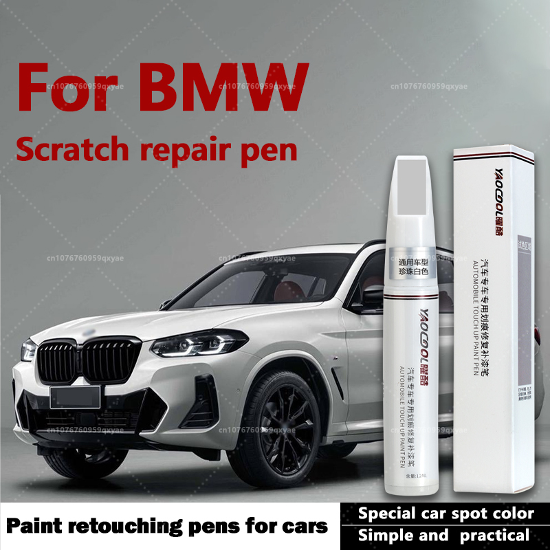
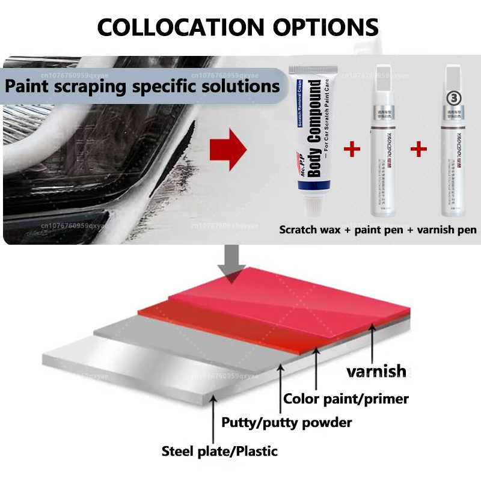
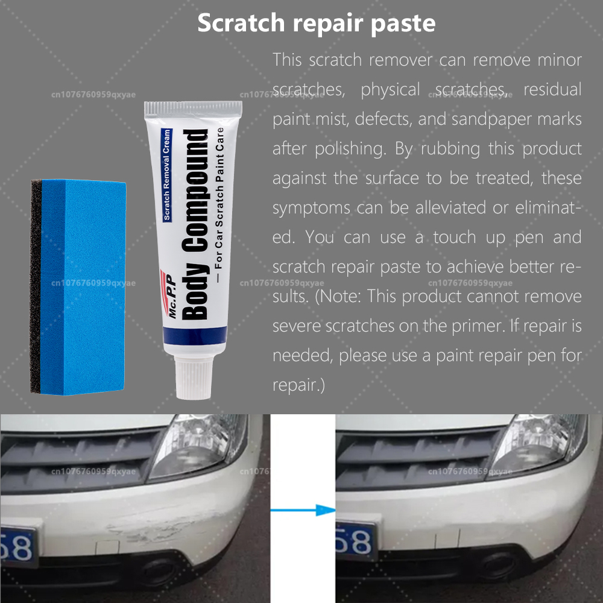
This scratch remover can remove minorscratches,physical scratches, residualpaint mist, defects, and sandpaper marksafter polishing. By rubbing this productagainst the surface to be treated, thesesymptoms can be alleviated or eliminat-ed. You can use a touch up pen andscratch repair paste to achieve better re-sults.(Note: This product cannot removesevere scratches on the primer. lf repair isneeded, please use a paint repair pen forrepair.)
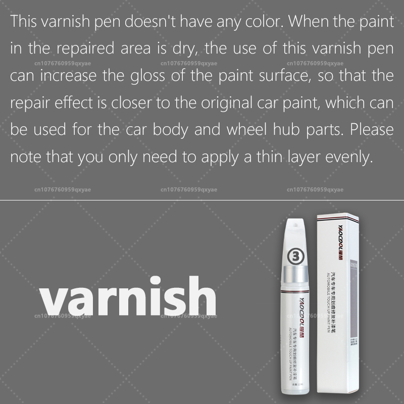
This varnish pen doesn't have any color. When the paintin the repaired area is dry, the use of this varnish pencan increase the gloss of the paint surface, so that therepair effect is closer to the original car paint, which canbe used for the car body and wheel hub parts. Pleasenote that you only need to apply a thin layer evenly.
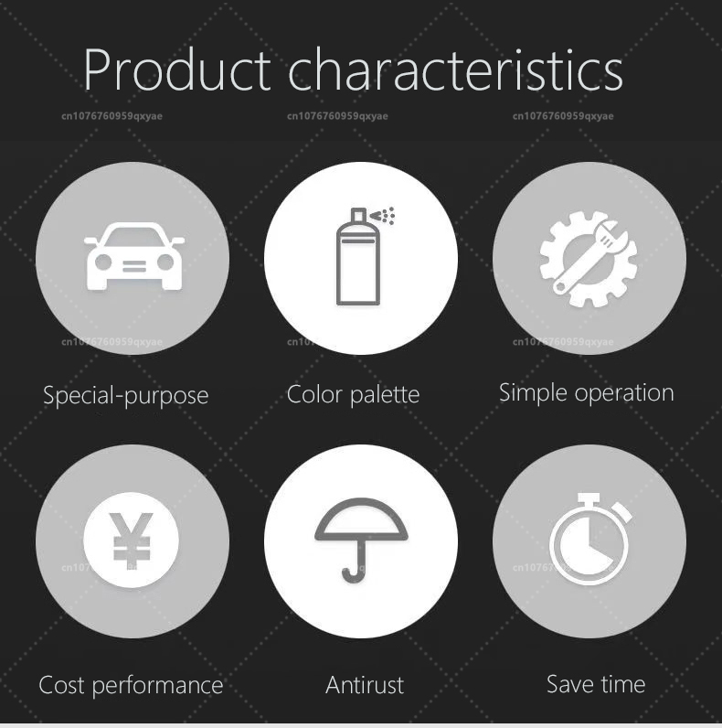
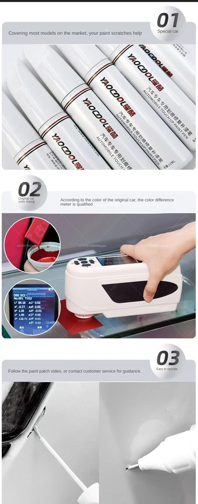
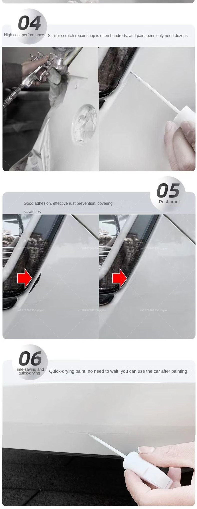
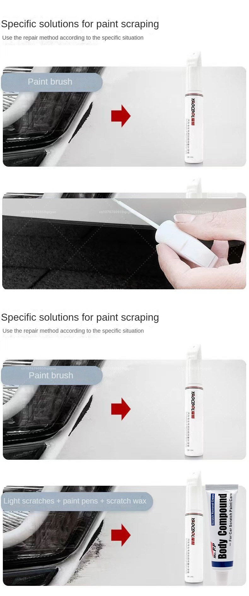
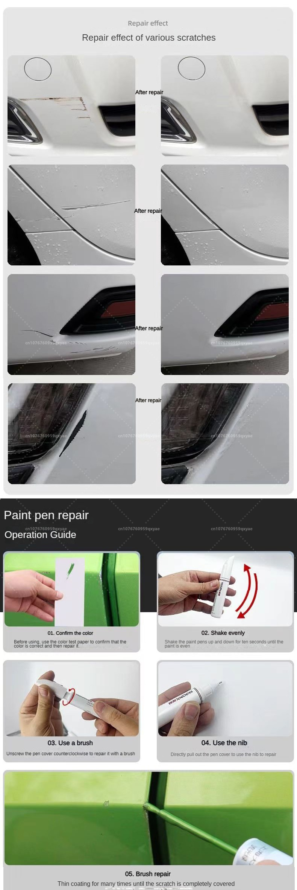
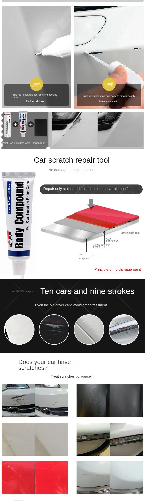
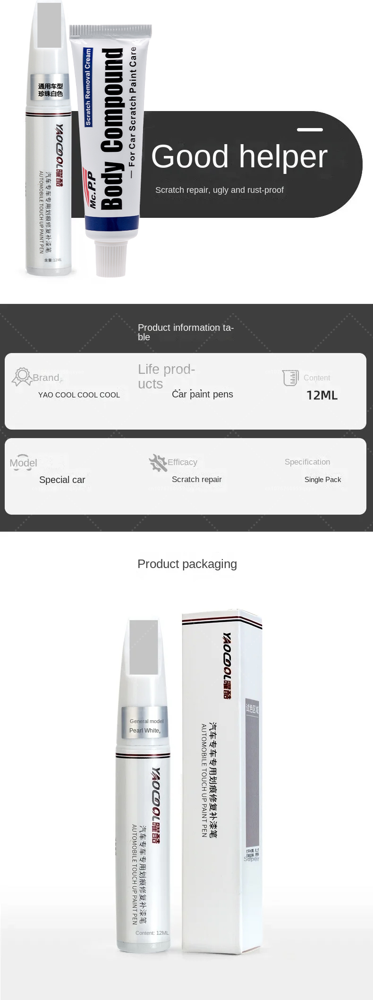
As paint pens and wax are special liquids and pastes, we will arrange a special logistics company for transportation and provide you with the logistics tracking number (you can check on the order page, and there will be logistics updates 5 days after shipment). If you have any questions, please contact customer service directly. We will handle them for you within 24 hours. Thank you very much for your support. Application:Ruiyi, Mazda CX-7, Mazda CX-3, Mazda CX-8, Mazda CX-5, Mazda 2 Jinxiang, Mazda 2, Mazda 3 Xingcheng, Mazda 3, Mazda 6, Mazda 3 Onksera, Mazda CX-30, Atz, Mazda CX-4, Mazda 5, Mazda CX-50
1. Capacity: 12ml
2. This pen will only remove slight scratches, which may require additional application. This pen will not remove dents or deep scratches!!!
3. There are two repair methods:
-the first is a paint pen single set, and the pen tip can repair small scratches no more than 2 cm.
-The second type of paint touch pen+scratch wax is suitable for large-area repair (less than 0.08 ㎡, no leakage of car primer), as shown in the figure.
Steps for use:
Step 1: Apply the color on the test paper to check the color (especially important), and continue only when the color is similar to the car
Step 2:Before touching, clean the scratch area before use Scratch wax and Paint pen.
Wipe the car surface with scratch wax several times (if have). After shaking the stylus 10 seconds, use a brush moistened in tablet liquid or tip to brush in the faulty position.